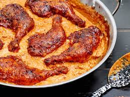

Paprikash

description
A Hungarian dish resembling goulash (a paprika-based potato stew), but
without potatoes and using meat instead, often chicken and sometimes veal.
ingredients
- 1 (12 ounce) package egg noodles
- 2 tablespoons butter
- 1 tablespoon minced parsley
- 1 ½ teaspoons salt, divided
- 1 teaspoon ground black pepper, divided
- 1 tablespoon olive oil
- 3 shallots, thinly sliced
- 6 cloves garlic, coarsely chopped
- 2 cups arrabbiata pasta sauce
- ¼ cup chicken broth
- 3 tablespoons red wine vinegar
- 2 pounds boneless, skinless chicken thighs
- 1 cup plain yogurt, divided
- 3 tablespoons paprika
Steps
- Fill a large pot with lightly salted water and bring to a rapid boil.
Cook egg noodles at a boil until tender yet firm to the bite, 7 to 9 minutes. Drain
and toss with butter, parsley, 1/2 teaspoon salt, and 1/2 teaspoon pepper. Keep
noodles warm while preparing the chicken.
- Turn on a multi-functional pressure cooker (such as Instant Pot®) and
select Saute function. Add oil, shallots, and garlic; saute until fragrant,
2 to 3 minutes.
Pour in pasta sauce, chicken broth, and red wine vinegar.
- Season chicken with remaining 1 teaspoon salt and 1/2 teaspoon pepper. Add
chicken to the pot. Close and lock the lid. Select high pressure according
to manufacturer's instructions; set timer for 12 minutes. Allow 10 to 15
minutes for pressure to build.
- Release pressure using the natural-release method according to
manufacturer's instructions, about 10 minutes. Release remaining
pressure carefully using the quick-release method.
- Place 1/2 cup yogurt in a small bowl. Add in 1/2 cup of sauce, a
tablespoon at time, to temper the yogurt. Add paprika and blend well.
Pour yogurt mixture back into the pot. Shred the chicken thighs and serve
over cooked noodles. Garnish each serving with a dollop of yogurt.